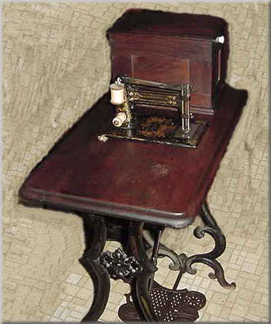
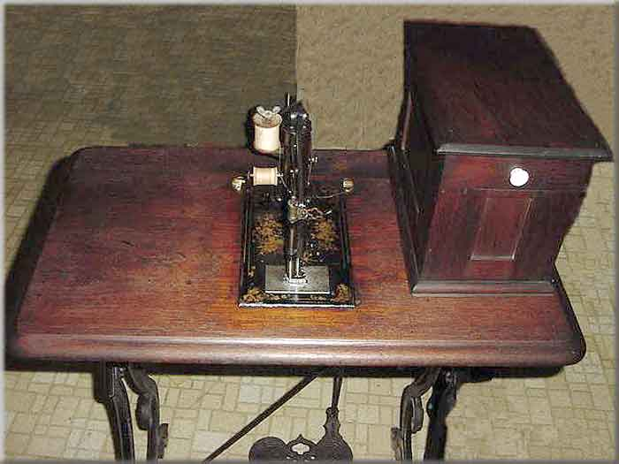
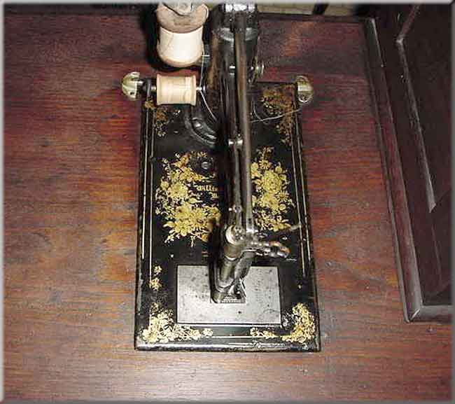
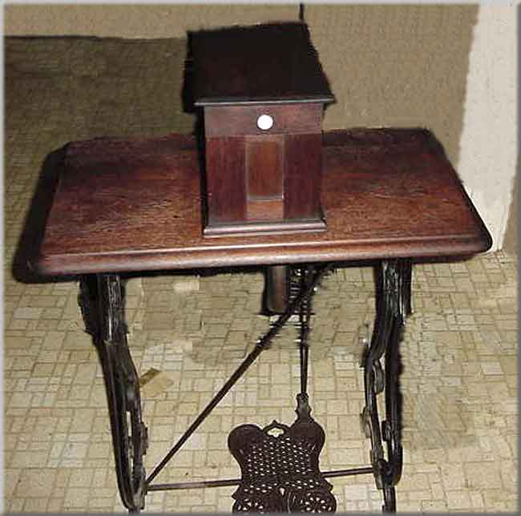

Williams & Orvis
Boston, Massachusetts
This is one of the earliest models by Williams & Orvis, dating to circa 1860, according to Carter Bays (2-228).
This is a two-thread chain stitch, friction-driven machine. One of the pictures shows part of the friction wheel.
Side View / Head & Cover / Machine Head / Front view
Side View of Machine

Head & Cover

Machine Head

Machine and Cover

©
Alan Quinn 2001
Pictures posted on this page may not be reproduced or distributed in part or in whole without the prior written permission of the relevant copyright owner